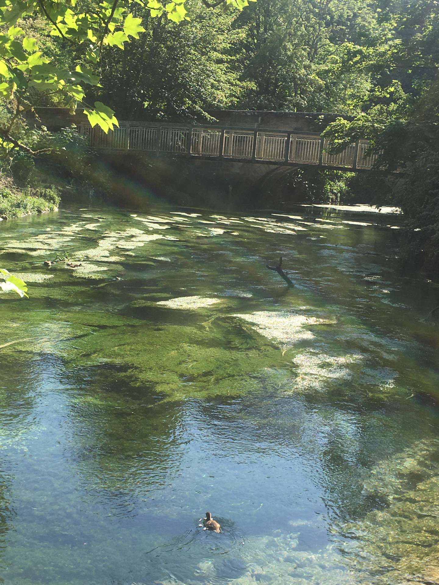

To start off our little record of memories, i'm going to go over all
the times we've took photos together because they tend to be my
favourite. No matter where they are taken, they always remind me of
our connection.
More recent pictures,including this one, with my newer phone show to
me that weve grown together, Bit of a stupid metaphor but the photos
that came from me were on a poo phone and look at our progression.
Let's just ignore me in this photo and focus on your beauty. I really
enjoyed this walk even though i was coughing up a storm, the little
conversations we had and sight seeing we did was amazing.
this photo reminds me of them photos that people have in their
relationship catolgue when they hit a long anniversary. What a cute
couple we are.
What an iconic photo. This and the amazing drawing up on my wall sit
close to me just because its quite well taken to be fair. perfect
heart shape paired with my forehead what could go wrong. I could of
picked the photo of you kissing me but i've done so before so gonna
introduce something new.
beautiful places!
The arundel lake is a place to be, whenever we ride it and almost die
i secretly love it because its always a beautiful view no matter what.
When we kissed under that little tree by the hut I actually felt like
we were in the notebook. Talking about that little hut...
funnily enough it also it seems like the fact that we wrote our
initials then a year later we added another heart came straight out of
a movie like the notebook or the titanic too. I hope its still there
for another trip after our GCSEs in the summer.
It's funny how your older phone managed to capture such an ethereal
picture that could be in a magazine somewhere. The cherry on top is
that the castle is so beatiful, maybe itll be worth it to spend the
fortune to wander inside it!
bit of a trend now with the arundel pics but this is the last one. And
what a last image it is, pure green water with a lil duck swimming
around it's so cute. We have to just stroll around arundel again
please

Can't be a beautiful place memoir without our france trip. This is
definitely up there with my favourites and it would be in there if
your arms weren't asking me a question. I picked this one because it
has you and my sister and you two are very important to me so I love
it. Cant forget to mention the perfect mountains in the back damn.
underrated little pic of the bird that stole your heart in the oldest
cafe in geneva. ths sign is really well designed and when i was
scrolling through my camera roll picking pictures to use in this
little montage it struck out to me. Pretty, unique, things like these
remind me of you.
personal favourites......
The ultimate 3. The first one is my favourite. that picture along with
the picture on the first valentine website are my 2 favourites. Mainly
because they're so recent and becuase we both look good ( you look out
of this world) for once. Normally its only you, especially since its
vintage. The second picture is adorable with the view of that little
village of our mountain top village and the distant mountains crafting a
background. That image embodies to me what it feels like to be free. The
third image may be a bit suprising since you sent it to me like 3 hours
ago, but you look so pretty i had to include it. I've never seen a women
look so gorgeous with ease and i can't wait to see you with that on in
real life.
Thank you for reading and watching my love, I hope you enjoyed and
smiled a few times. I love you!